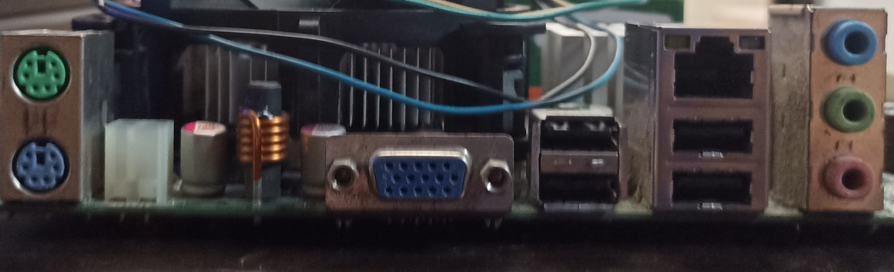
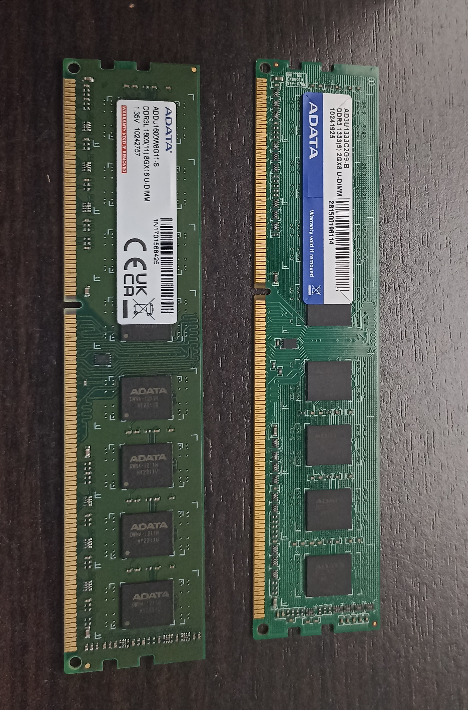

Una Tarjeta madre algo pasada de moda pero aún conserva su potencial. La FSB-1333 es una tarjeta madre ITX, perfeto para un procesador de esa clase. Paquete con CPU seleccionada que funciona en FSB1333 / 2.66GHz Esta placa base también es compatible con las especificaciones de CPU inferior: - LGA 775 para procesadores Intel Dual Core Core™ 2 Extreme / Core™ 2 Duo / Pentium® D / Pentium® Dual Core / Pentium® 4 / Celeron® / Celeron® D - Compatible con todos los procesadores FSB 1333/1066/800/533 MHz excepto Quad Core - Soporta tecnología Hyper-Threading Chipset Intel® 945GC A2 Soporta memoria Dual Channel DDR2 667/533 x 2 ranuras DIMM con Máxima capacidad hasta 4GB Intel® Graphics Media Accelerator 950, DirectX 9.0 y Tamaño máximo memoria 224MB 1 x ranura PCI Express x16 Hybrid Booster - Safe Overclocking Technology Overcloking desatado : durante el overclocking, FSB disfruta de un mejor margen debido a los buses PCIE / PCI fijos 4 x conectores SATA2 de 3,0 Gb/s Audio 7.1 CH Windows® Vista™ Premium Level HD (Códec de audio ALC888), Ethernet LAN 10/100 Windows® Vista™ Premium 2007 Logo Ready HD 8CH I/O: 4 Puertos USB 2.0 listos-para-usar, Conector de Audio 7.1 canales HD |

Como podemos apreciar en la imagen, en la parte derecha tiene 3 puerto para "audio (Verde), microfonó (Rosa) y entrada de linea (Azul). 4 puerto de USB 2.0 y 1 puerto de Ethernet (Jack45), y a lado izquierdo tenemos 1 puerto de VGA y 2 puertos para mouse y teclado (esos ya no se venden o son muy escasos). |

Un Pentium es una gama baja pero puede colaborar con tareas de la escuela o de la universidad, trabajar en programas de ofimática, es un procesador que tiene graficos integrados. Este procesador Intel Pentium Dual-Core E5800 ofrece la potencia de procesamiento que necesitas para multitarea, edición de video digital y audio, juegos y entretenimiento multimedia. Esta CPU Socket 775 se registra a velocidades de hasta 3.2 GHz y cuenta con una velocidad de bus de 800 MHz y una caché L2 de 2 MB. |

Son 2 Sticks DDR3 de memoria ram 1 de 2GB y la otra de 8GB, unidas forman 10GB. Marca ADATA. |

.png)
Una Fuente de poder que tal vez sea básica (generica), pero aún puede darle vida a la pc. Como podemos apreciar en la imagen, toda la información tecnica de la fuente, ella trabaja a 250W lo cual es perfecto para darle más vida al procesador y a la tarjeta madre. |

Un disipador stocks es perfecto para los procesadores como el pentium que es gama baja, pero este disipador puede disipar el aire del procesador muy bien. |